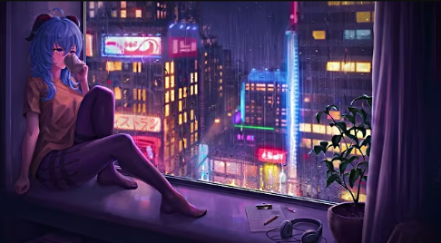
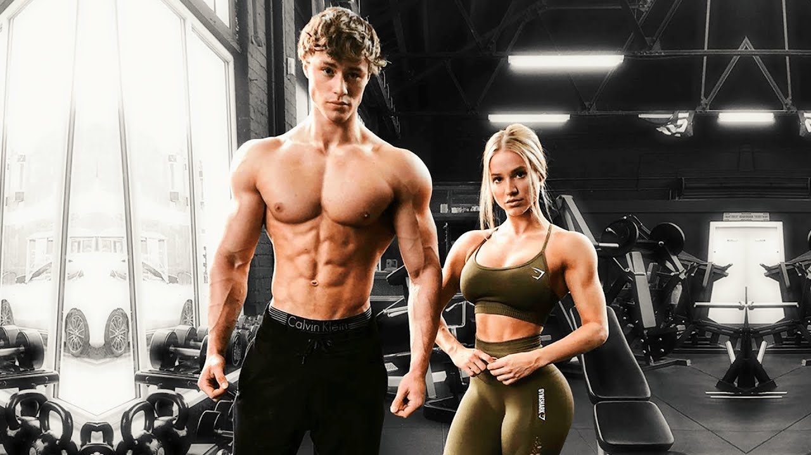

Mi Blog
Bienvenido a mi espacio personal donde comparto mis experiencias, pensamientos y pasiones.
Juegos Preferidos


Musica favoritas



Lifestyle

Rutinas de ejercicio que me gustan
Cómo mantengo una rutina saludable mientras estudio ingeniería...
Leer más
Mis rutas favoritas en Arequipa
Los mejores lugares para correr y hacer bouldering en la ciudad...
Leer más

Comidas favoritas .


Universidad

Mi experiencia ingresando a la UNSA
Después de varios intentos, finalmente logré ingresar a Ingeniería de Sistemas.
Leer más